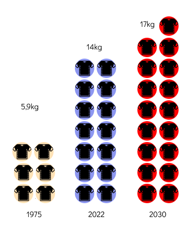
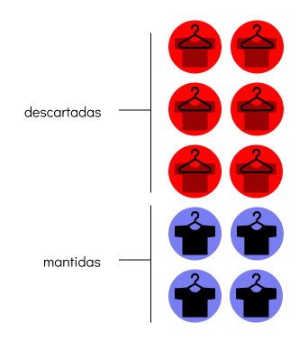
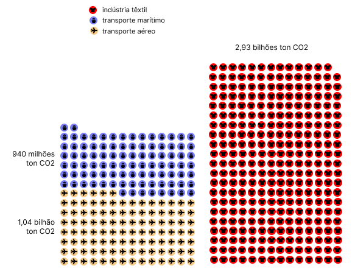
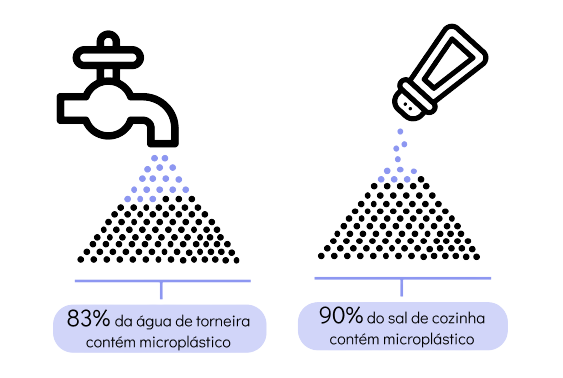

A influencer de moda
(e o sal contaminado que você come)
o que uma coisa tem a ver com a outra?
segue o fio!
Hoje, compramos o dobro de roupas
que na década de 70

Um dos motivos do nosso guarda-roupa ter ficado maior é a influência causada por celebridades.
E a indústria da moda sabe disso. A cada US$ 1 investido em influencers, a moda lucra US$ 5,20.
Isso foi um dos fatores para a produção têxtil dobrar entre 2000 e 2022.
De cada 10 peças que compramos,
6 vão para o lixo

Quando uma influencer usa uma peça, o produto se esgota em questões de horas ou dias nas lojas.
Compramos influenciados e 2/3 dessas roupas vão para o lixo no primeiro ano de uso.
Um desperdício de US$ 460 bilhões por ano.
No deserto do Atacama são descartadas
39 mil ton/ano de roupas
As marcas também cometem absurdos.
Em 2018, a Burberry queimou US$ 37 milhões de mercadorias não vendidas.
Marcas de luxo não baixam o preço do que não venderam. Preferem queimar ou jogar foraa deixar de ser uma marca exclusiva para ricos.
O impacto é enorme.
A moda é responsável por despejar mais de meio milhão de ton de microfibras de tecidos sintéticos, que são um tipo de microplástico.
Isso equivale a 50 bilhões de garrafas plásticas.
A indústria da moda emite 10%
de CO2 do mundo

De cada 10 pessoas testadas,
8 têm microplásticos no organismo

E você acha que só a tartaruga no mar engasga com plástico? Não!
Um estudo mundial identificou microplásticos em 83% de amostras de água de torneira e 90% do sal de cozinha.
Ainda foi encontrado em cerveja, açúcar e até no mel.
A microfibra demora 200 anos para se decompor. E ela só se soma aos outros tipos de poluição que criamos.
Para desembararçar esse fio da cadeia produtiva da moda, é preciso que o consumidor e o setor mudem a forma como essa trama se desenrola.
Por Carina Dourado